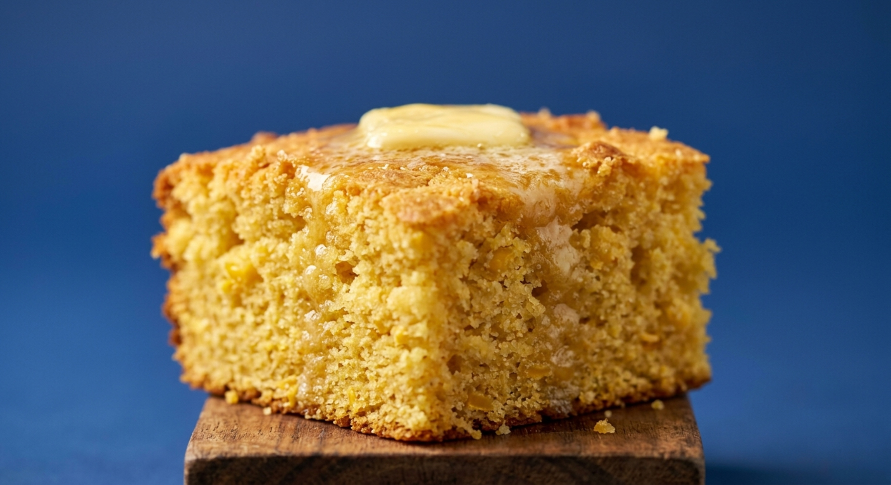

Cornbread

Description
This recipe is for a moist and crumbly cornbread.
Cornbread is one favorite southern style dishes.
Ingredients
- Flour: 2 cups
- Cornmeal: 1 cup
- Sugar: 1 cup
- Baking powder: 1 1/2 tbsp
- Salt: 1 tsp
- Melted butter: 1/2 cup
- Oil: 1/2 cup
- Milk: 1 1/4 cup
- Eggs: 3 large
- Honey and butter for serving
Steps
- Preheat oven to 350 degrees fahrenheit and grease a 9 x 13 inch pan
- Whisk together flour, cornmeal, sugar, baking powder and salt in a large bowl
- Whisk together butter, oil, milk and eggs in a separate bowl
- Add the wet ingredients to the dry ingredients and mix until combined
- Pour the batter into the pan and cook for about 35 to 45 minutes until golden brown
- Allow the cornbread to cool for about 15 minutes before cutting and serving
- EAT!